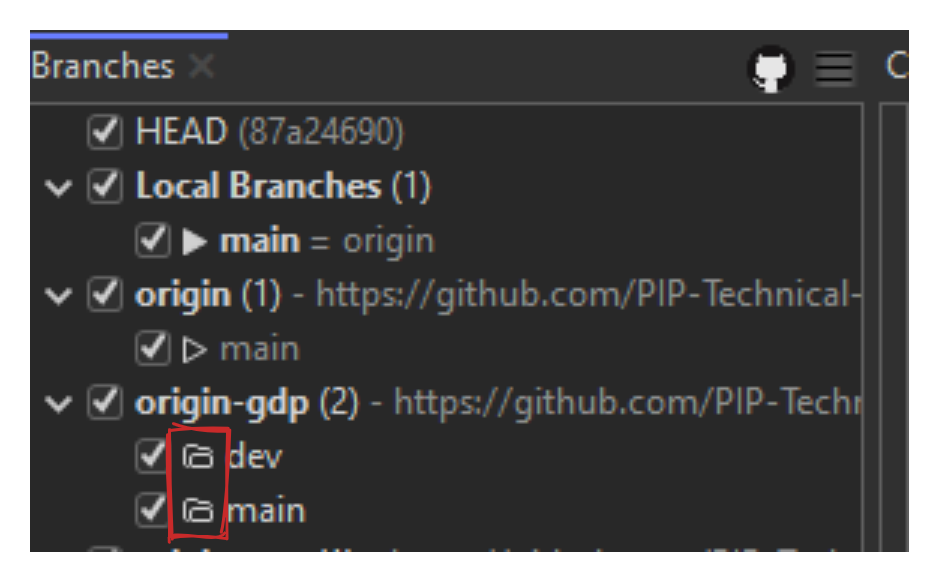
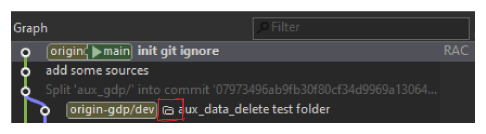
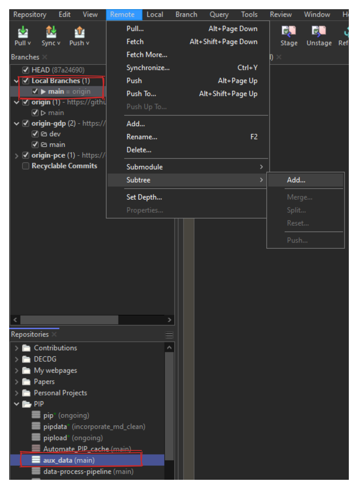
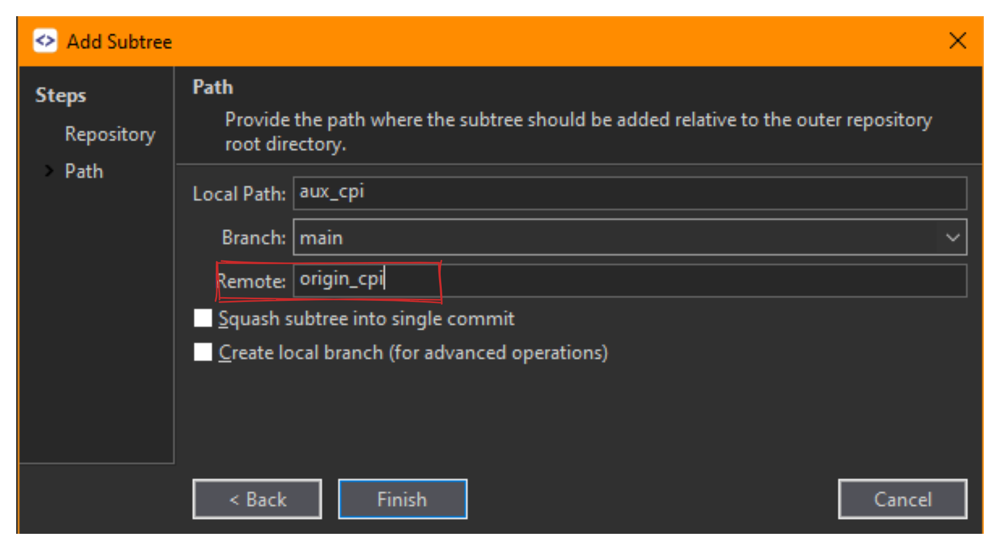
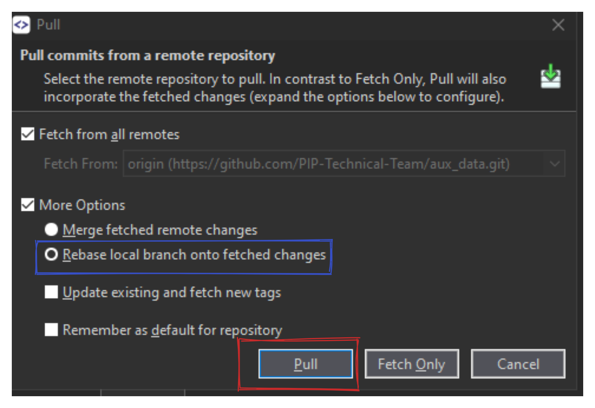
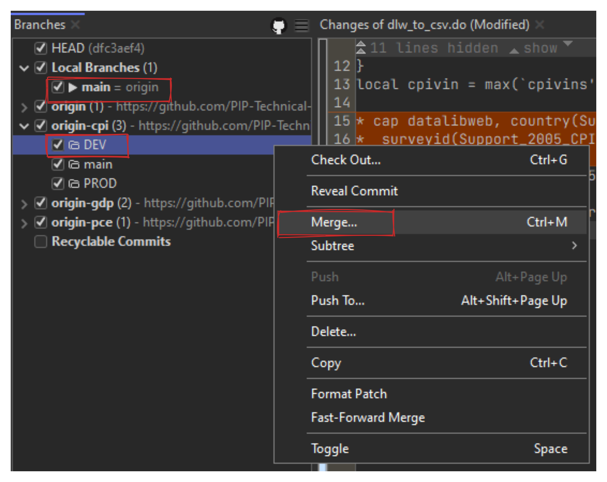
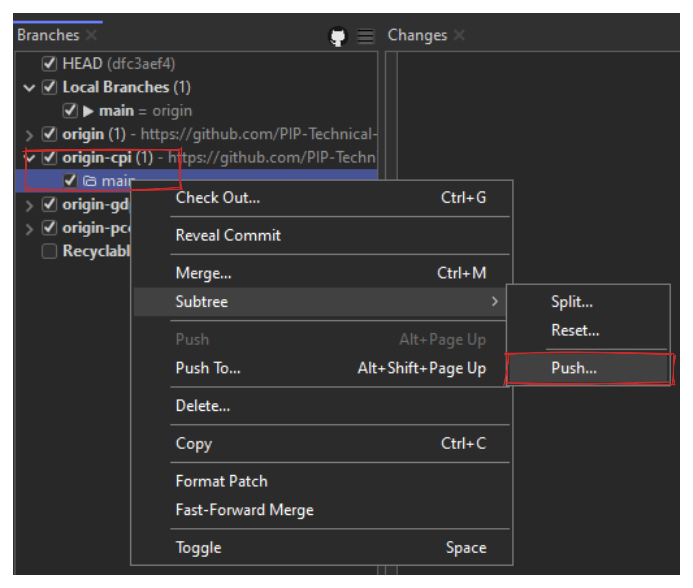
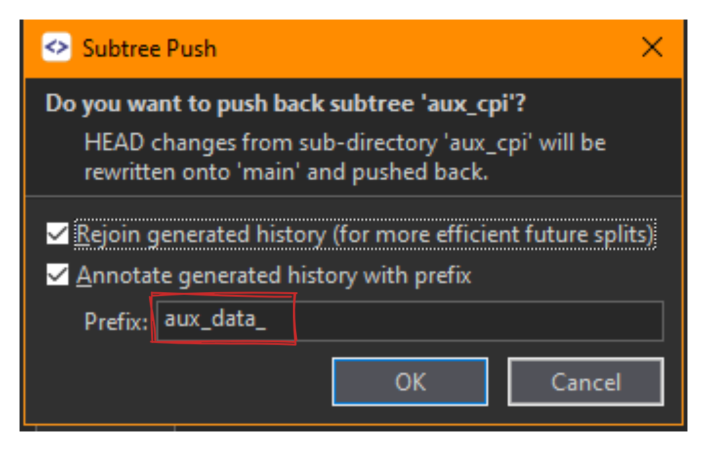
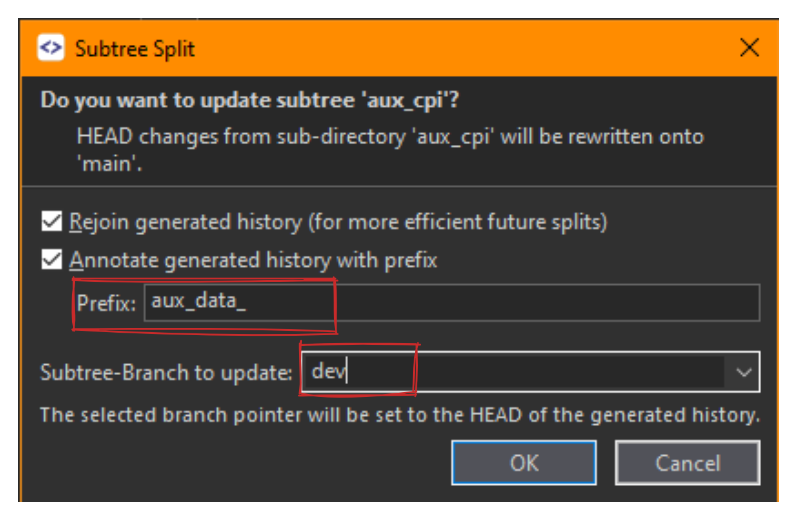

15 Subtrees using Smartgit
15.1 NOTE:
This chapter is basically a “copy and paste” document from the original Smartgit page. The value added is the images that illustrate what is written.
Subtrees is a way to integrate other repositories into a, more general repository. Each repository that is added to the main repository is a “subtree” and will be stored as a sub-folder into the root directory of the main repository.
15.2 Subtrees in the UI
Refs belonging to subtrees will be denoted in the Branches view by a folder-symbol.

Local subtrees will show up in the Subtrees category. The root commits of a subtree will be denoted by a folder-symbol in the Log Graph.

15.3 Basic Subtree operations
To add a new subtree, select the root directory of the repository in the Repositories view and invoke Remote -> Subtree ->Add.

If you’re adding several subtrees to the main repo, rename the remote subtree when you’re adding a new subtree

To fetch new (remote) changes from the subtree repository, select the subtree remote in the Branches view and invoke Pull from the context menu.

To merge (or cherry-pick) a subtree use the Merge (or Cherry-Pick) command. SmartGit will understand whether the source commit is a subtree and in this case perform a subtree merge (or cherry-pick).

To push commits back to a subtree, select the (remote) subtree branch in the Branches view and invoke Remote|Subtree|Push. Pushing a subtree involves splitting changes back from main repository to subtree repository (more details can be found below).
To reset your main repository to a certain subtree, first Check Out the branch which should be reset. Then, in the Branches view, select the subtree branch to which your main repository should be reset to and invoke Subtree|Reset from the context menu.
15.3.0.1 Note
If there are already existing subtrees in your main repository you will have to add corresponding remotes for these subtrees using Remote|Add.
15.4 Synchronizing changes back to the subtree repository
There are two ways of pushing changes to the remote.
15.4.1 Using Push
Check Out the the repository’s branch which will be pushed to a specific subtree branch.
Make sure your changes are staged and commited in the branch of your choice in the main repository
In the Branches view, select the subtree branch to which the changes should be pushed and invoke Subtree->Pushfrom the context menu.
Use the prefix to specify that this change is coming from a repo that is using the modifying repo as a subtree

The commits created by the Split-command will be written to the Subtree-Branch to update. If you have selected a remote subtree branch, you will have to select Subtree-Branch to update or enter the name of a new branch there; in either case the selected branch will then be updated/created. In this case I decided to implement the changes in the dev branch of the subtree. Since that branch does not exist it won’t be created
15.4.2 Using Split
After having applied changes to files in your main repository which actually belong to a subtree repository, you can “synchronize” these changes back to the subtree repository using the Split command:
Check Out the main repository’s branch which should be split back.
Make sure your changes are staged and commited in the branch of your choice in the main repository
In the Branches view, select the subtree branch to which the changes should be split back and invoke Subtree|Split from the context menu. The commits created by the Split-command will be written to the Subtree-Branch to update. If you have selected a remote subtree branch, you will have to select Subtree-Branch to update or enter the name of a new branch there; in either case the selected branch will then be updated/created. In this case I decided to implement the changes in the dev branch of the subtree. Since that branch does not exist it won’t be created
15.4.2.1 Note
SmartGit will not actually split changes back to this particular branch but the branch selection serves primarily to identify to which subtree the changes should be split back. The underlying Git command will then detect the appropriate subtree commits onto which the new commits will be split back.
To push changes back to your remote subtree repository, tracking between the local subtree branch which has just been updated/created in step 2 and the remote subtree branch has to be set up. This can optionally be done as part of the Add wizard or you can do it manually:
In the Branches view, select both the local and remote subtree branch and invoke Set Tracked Branch from the context menu.
The Branches will now denote ahead/behind commits for the local subtree branch.
Verify these ahead/behind commits also in the Graph.
Push back the subtree commits by selecting the local subtree branch in the Branches view and invoking Push from the context menu.